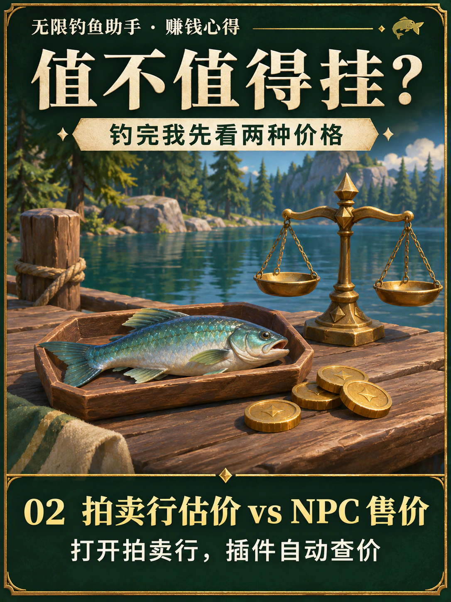
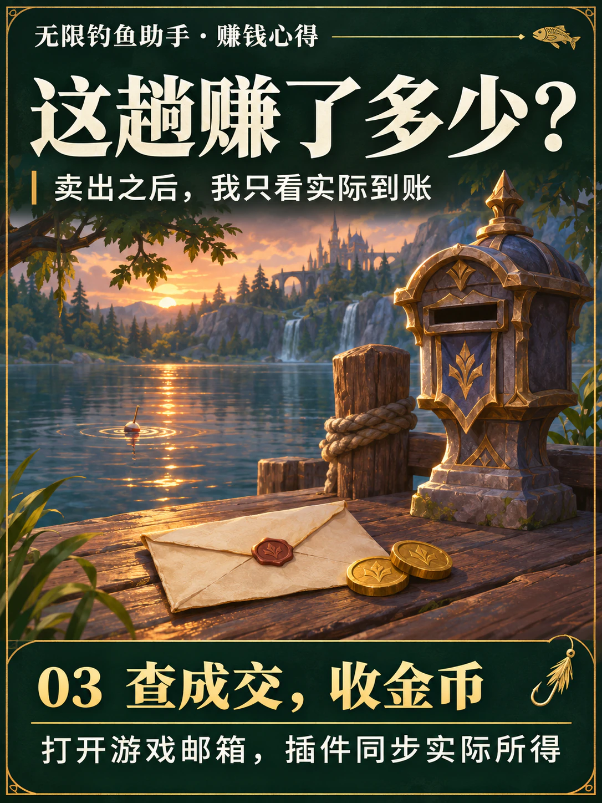

在魔兽钓鱼，怎么还要对账啊🎣
本来想上线钓两竿，放松一下。
一小时后，我在拍卖行核算一条鱼值不值得我再跑一趟邮箱。
最近在《魔兽世界：无限》用「无限钓鱼助手」，愣是把湖边摸鱼玩成了摆摊做生意：
先挑鱼，再下竿
在插件里按区域查鱼，点钓点就能开地图。以前是走到哪儿钓到哪儿，现在出门前先看看今天去哪条河进货。

钓完先比价
打开拍卖行，用插件比一比挂单价和 NPC 收购价。差得多就挂，差几银就卖 NPC。这点利润，还不够我来回跑两趟的耐心。

赚多少，邮箱说了算
挂上去的时候：今晚赚麻了。
打开邮箱：您好，您的鱼已退回。
所以现在我只看实际到账。钓鱼可以空军，账不能凭空多出二十金。
